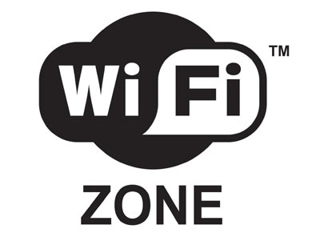

VISA AMEX REDECARD
ELECTRON REDESHOP
DIARIAMENTE APARTIR DAS 11:30 HS.
Há mais de meio século a Cantina Roperto, um dos restaurantes mais tradicionais do Bixiga, se mantém fiel à cultura italiana. Suas receitas, passadas a cada geração desde a chegada da família ao Brasil, oferecem o melhor da culinária do Sul da Itália.
São mais de vinte tipos de massa a serem combinadas com diferentes molhos. Além da famosa Perna de Cabrito, o Filé à Parmigiana e o Fusilli ao Sugo são pratos que ganharam a preferência dos clientes.
O ambiente familiar ainda conta com música ao vivo todas as noites e nos almoços de sábado, o que torna o clima ainda mais alegre e aconchegante.